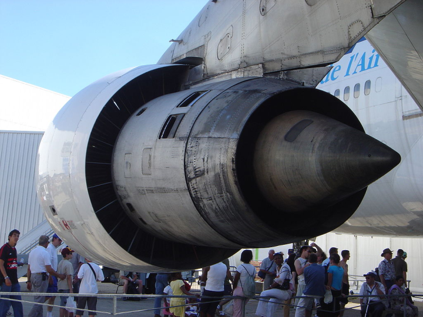
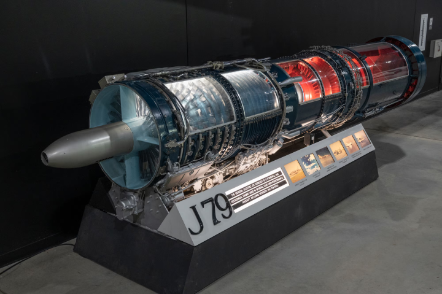
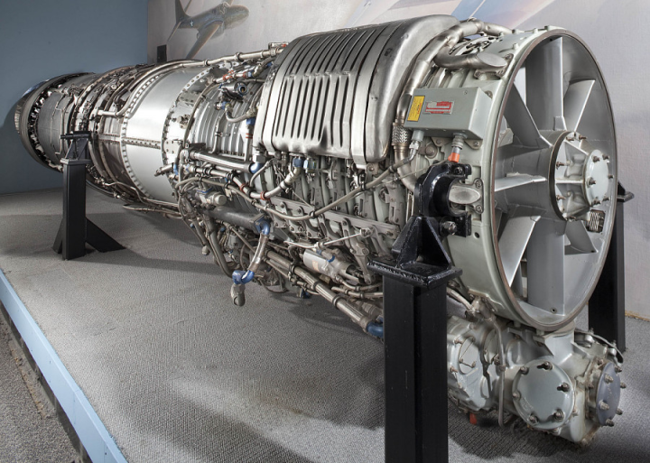

|
În general sistemele de propulsie ale unei aeronave se compun din: Rolul sistemului de propulsie este de a asigura tracțiunea avionului. În prezent există o mare diversitate de motoare de aviație cu combustibil chimic; iată o scurtă clasificare după modul în care se realizează tracțiunea: În continuare sunt prezentate două dintre cele mai utilizate motoare în prezent: motorul simplu reactor (MTR) și motorul reactor cu dublu flux (MTRDF). Motorul turboreactor este motorul care echipează în prezent aeronavele care zboară la altitudini mari și viteze peste 0,6 Mach. Principiul său de funcționare este următorul: aerul care intră prin dispozitivul de admisie este comprimat de către compresor, intră în camera de ardere unde formează împreună cu combustibilul injectat amestecul de gaze de ardere și are loc arderea propriu-zisă. Gazele arse trec apoi prin turbină, unde are loc destinderea lor parțială prin rotație, apoi trec prin ajutajul de reacție și ies din sistem cu o energie cinetică mult mai mare decât cea de intrare, asigurând astfel componenta de tracțiune a avionului. Eventual, la avioanele supersonice putem întâlni sistemul de postcombustie. Acesta se află încorporat în sistemul de evacuare și are rol de a injecta o nouă doză de combustibil în amestecul de gaze arse provenit din camera de ardere. Noul amestec mai arde o dată, rezultând o creștere considerabilă a tracțiunii. Motoarele turboreactoare cu dublu flux - denumite generic turboventilatoare - sunt de fapt turboreactoare modificate. Ele se caracterizează prin existența a două fluxuri de curgere paralele: unul secundar, de aer, antrenat de un ventilator montat pe același ax cu compresorul de joasă presiune a turbinei, care îmbracă fluxul de aer primar (interior) format din gaze de ardere. Tracțiunea MTR-DF este suma tracțiunilor rezultate de cele două fluxuri. Nu trebuie uitat că ventilatorul are rol de propulsie, funcționând ca o elice. Un sistem MTR-DF este prezentat în desenele alăturate. Exemple de motoare MTR 
|   |